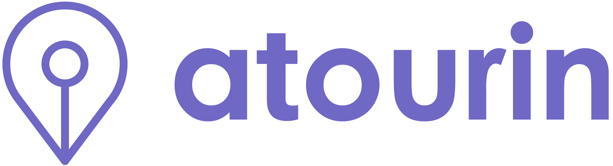
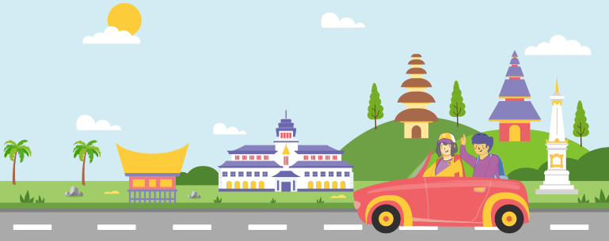

Atourin Design System
Fondasi visual & komponen tunggal untuk web dan aplikasi mobile Atourin, platform tourism technology Nusantara. Token diambil langsung dari kode produksi (Flutter + web), bukan rekaan baru.
Prinsip desain
Empat prinsip yang memandu setiap keputusan visual dan interaksi di seluruh produk Atourin.
Nusantara dulu
Konten lokal, bilingual (ID/EN) lewat glosarium, dan rasa percaya diri sebagai platform wisata Indonesia.
Jelas & ramah
Bahasa hangat dan to the point. Ungu sebagai sinyal aksi, neutral yang tenang untuk konten.
Tanpa dead-end
Setiap tombol punya aksi nyata: navigasi, modal, atau feedback. Pengguna tidak pernah buntu.
Satu sistem
Web dan mobile berbagi token, taksonomi, dan pola yang sama. Konsistensi lintas platform.
Warna
Ungu adalah jantung brand: dipakai untuk aksi primer, state aktif, dan aksen. Kuning, merah, dan hijau ARTI mendukung sebagai warna fungsional. Neutral menjaga konten tetap mudah dibaca.
Tipografi
Satu typeface untuk semua: Product Sans. Skala mengikuti TextTheme aplikasi Flutter, line-height dasar 1.4. Hanya dua bobot dipakai: Regular (400) dan Bold (700).
Spasi & grid
Skala 4-pt. Semua padding, gap, dan margin mengacu ke token ini agar ritme tetap konsisten.
Radius
Sudut membulat memberi kesan ramah. Pill dipakai untuk chip dan badge; kartu memakai 12px.
Bayangan & elevasi
Tiga tingkat elevasi mengikuti Material (1 / 2 / 4). Lembut dan rendah-kontras, bukan drop shadow tebal.
Motion
Transisi singkat dan halus. Easing standar cubic-bezier(.4, 0, .2, 1). Hindari animasi dekoratif yang berulang tanpa henti.
Hover, tap feedback, perubahan warna tombol & chip.
Sheet naik dari bawah, toast masuk, expand/collapse.
Transisi antar halaman, progress panjang.
Tombol
Komponen MButton (mobile) & tombol web. Tiga ukuran (sm 38 / md 48 / lg 56px), radius 8px. Primary untuk aksi utama, outline/ghost untuk sekunder.
Chip & tab filter
MChip berbentuk stadium (pill). Dipakai untuk filter kategori, saran pencarian, dan tag. State terpilih memakai ungu solid.
Badge & status
MBadge untuk label kecil: status pesanan, tier loyalty, diskon. Warna mengikuti makna (ungu netral, hijau sukses, kuning menunggu, merah penting).
Input & form
MInput tinggi 48px, border 1.5px, fokus berubah ungu. Label tebal 12.5px di atas field.
Kartu & list row
MCard permukaan dasar (radius 12, shadow-2, border hairline). MListRow untuk menu pengaturan dengan ikon, judul, subjudul, dan trailing.
Kartu produk
MProductTile: kartu utama katalog. Gambar 130px, badge opsional di kiri-atas, judul, lokasi, rating, dan harga ungu menonjol.
Feedback
Toast & empty state menjaga pengguna selalu mendapat respons. Mobile memakai showMToast(), web memakai atrToast() dengan tipe success / error / info / warning / loading.
Demo interaktif penuh (toast hidup, skeleton, maskot Poi) ada di Komponen Feedback.html & _uikit-preview.html.
Logo
Gunakan versi ungu di atas permukaan terang, versi putih di atas ungu/foto gelap. Jaga ruang kosong minimal setinggi huruf logo. Jangan ubah warna, regang, atau beri bayangan.

Atourin'" />Ikonografi
Ikon bergaya garis (outline), stroke 1.8-2px, ujung membulat, kotak 24px. Konsisten, ringan, dan netral, mewarnai ungu saat aktif dan abu-abu saat idle. Hindari ikon penuh-warna atau gradien.
text-muted saat idle. Tanpa fill warna.Ilustrasi & maskot Poi
Poi adalah maskot Atourin: blob ungu bertopi penjelajah kuning, dibangun dari bentuk dasar. Dipakai di empty state, onboarding, dan momen ramah, untuk menjaga nada hangat tanpa terasa kekanak-kanakan.
Ilustrasi spot bergaya datar dengan palet brand untuk header & state. Aset ada di assets/atr/illustrations/ dan no_connection.png / no_entries.png.

Pola layout
Anatomi layar mobile: top bar ungu, konten ber-gutter 20px di atas wash bg-soft, dan bottom nav 5-tab dengan FAB tengah. Halaman web memakai grid maksimal 1280px dengan gutter 40px.
Ungu solid, teks putih. Judul + aksi opsional (back / trailing). Transparan di atas hero.
Di atas bg-soft. Kartu putih radius 12, gap 10-16px. Section title dengan "Lihat semua".
5 tab: Beranda, Jelajahi, FAB tengah, Pesan, Akun. Tab aktif berwarna ungu.
Naik dari bawah (250ms), radius-xl atas, shadow-4. Untuk filter, pilihan, & konfirmasi.
Konten terpusat maks 1280px, gutter 40px. TopNav + UtilityBar di atas, footer multi-kolom di bawah.
Tone & penulisan
Hangat, percaya diri, dan jelas. Berbahasa seperti teman lokal yang paham wisata Nusantara, bukan korporat kaku.
- Pakai pemisah titik tengah
·, koma, titik dua, atau tanda hubung-. - Format Rupiah dengan titik ribuan:
Rp 1.240.000. - Istilah taksonomi via glosarium bilingual (ID/EN).
- Microcopy aktif & ramah: "Lanjutkan petualanganmu".
- Hit target minimal 44px; teks body mobile 13-15px.
- JANGAN pakai em-dash
—. Terasa seperti format AI. - Jangan campur Bahasa Inggris korporat berlebihan.
- Jangan tombol tanpa aksi (dead-end).
- Jangan warna di luar palet token.
- Jangan ubah proporsi atau warna logo.
File referensi
Design system ini bukan rekaan: token & komponen diambil dari kode produksi. Sumber kebenaran:
design-system/atr-tokens.css
Semua CSS variable: warna, type, spasi, radius, shadow, motion.
mobile/mobile-shared.jsx
MButton, MCard, MChip, MBadge, MInput, MListRow, MProductTile, MBottomNav, MToastHost.
site-chrome.jsx
TopNav, UtilityBar, Footer, login modal, atrToast.
atr-ui-kit.jsx
Toast, Skeleton, EmptyState, maskot Poi.
Panduan Developer.html
DB, endpoint API, enum, integrasi lintas-fitur.
shared/atr-canon.js · atr-i18n.js
Data mock & glosarium bilingual.